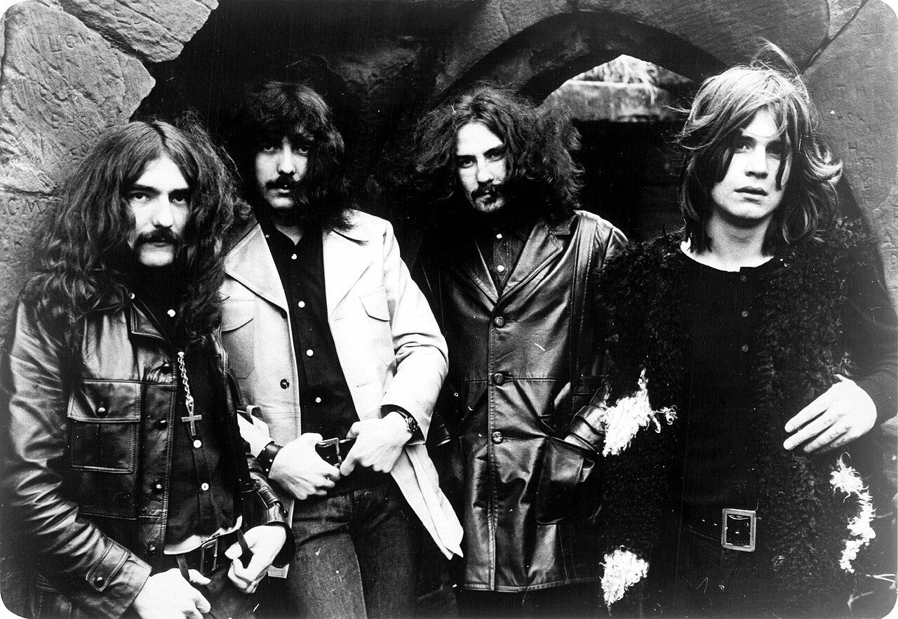
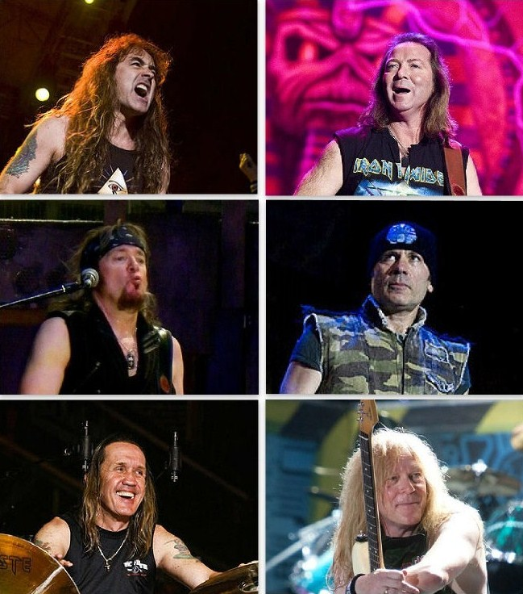
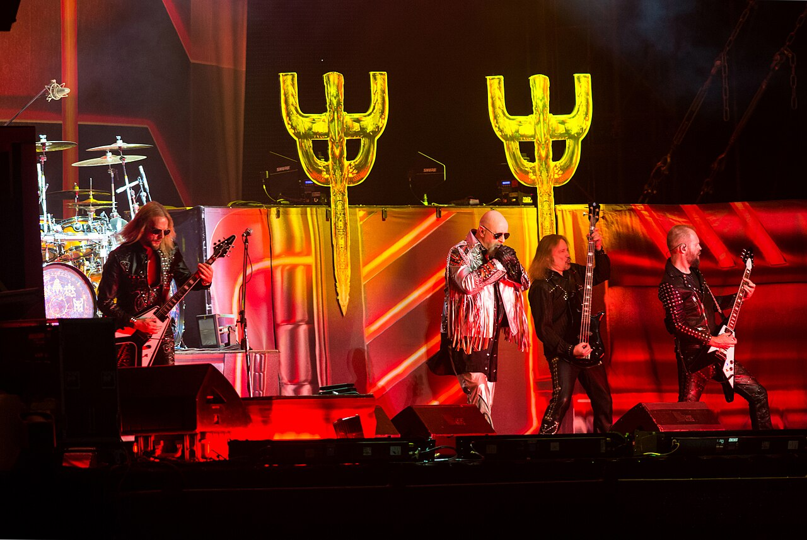
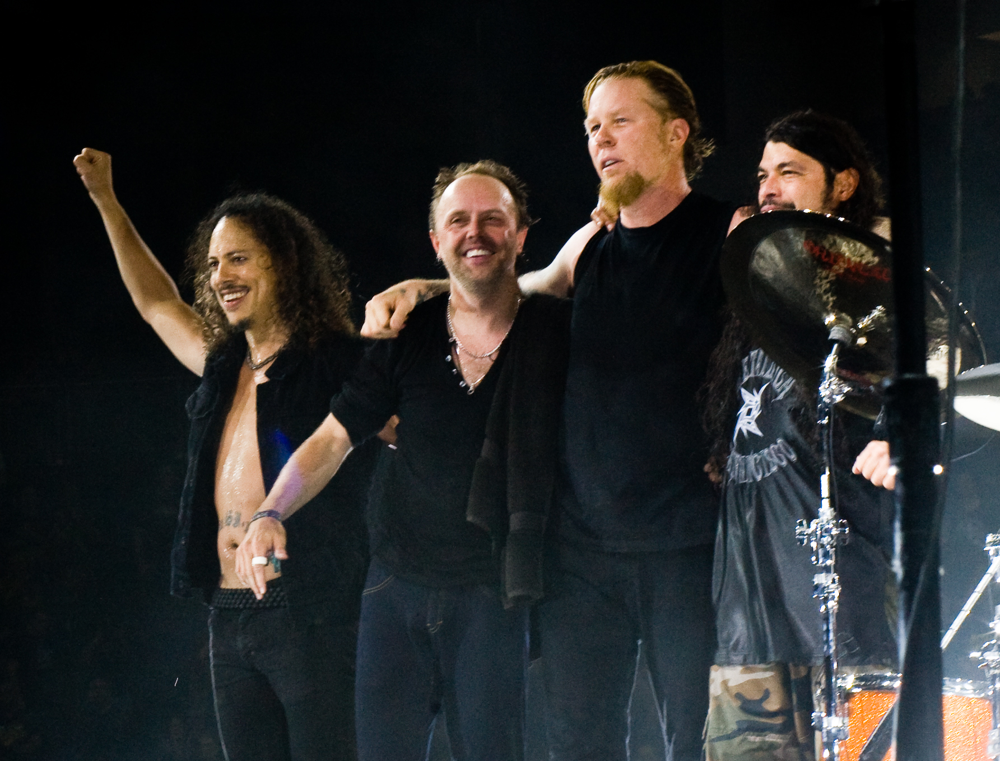
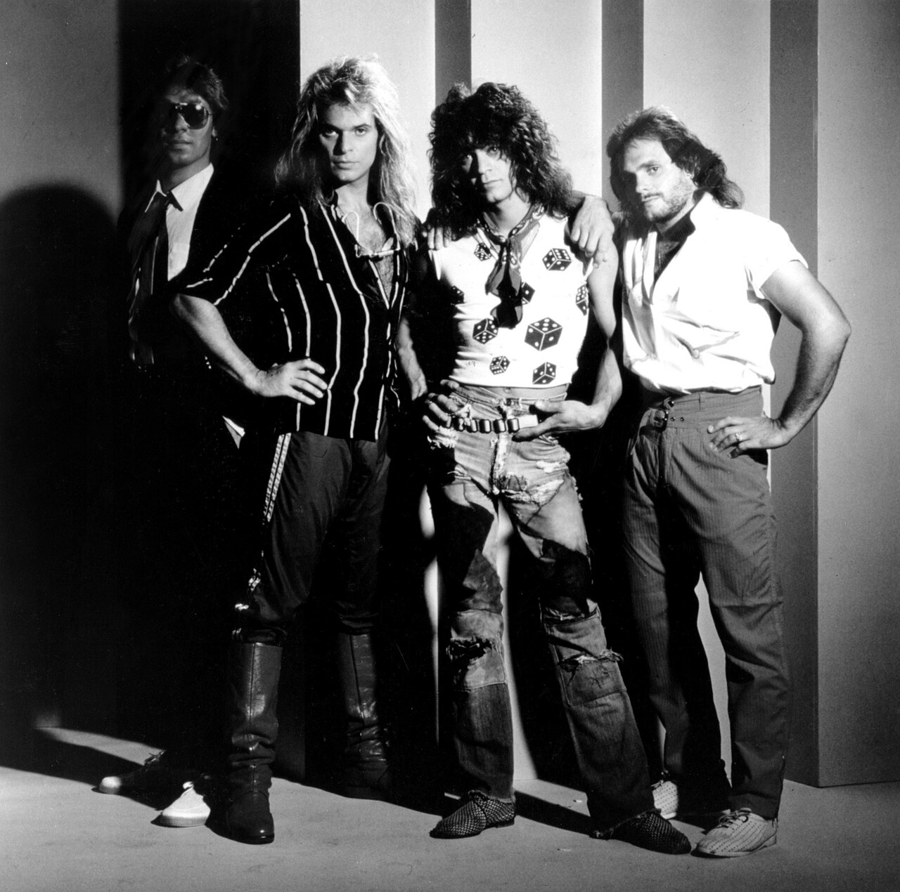
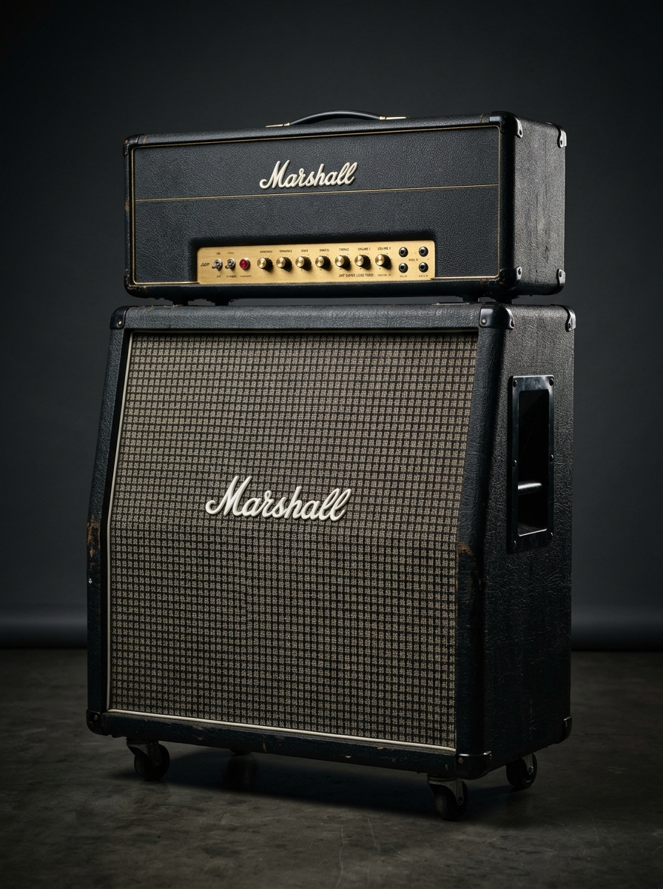
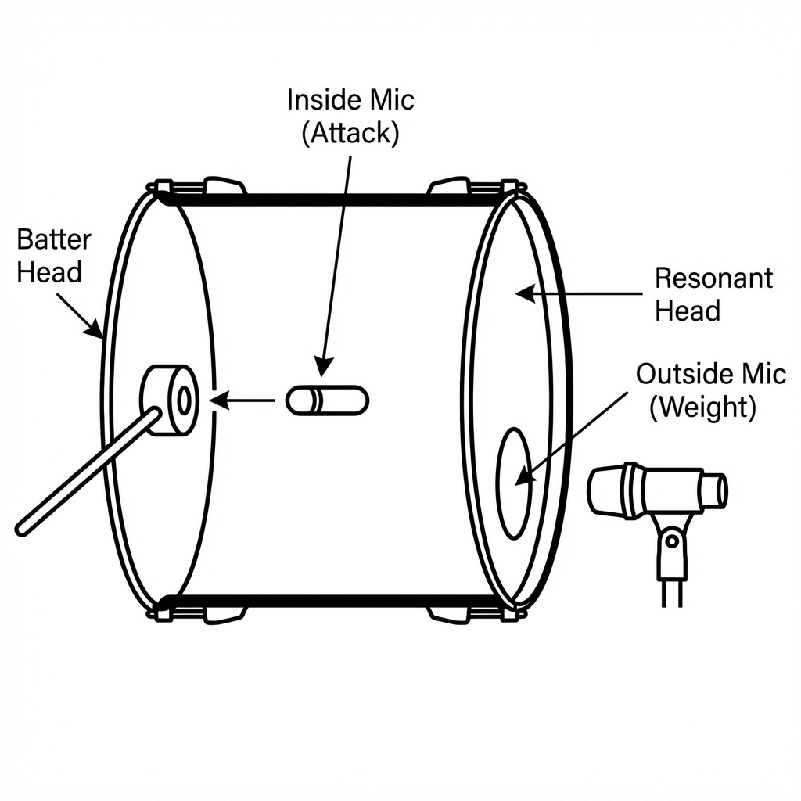
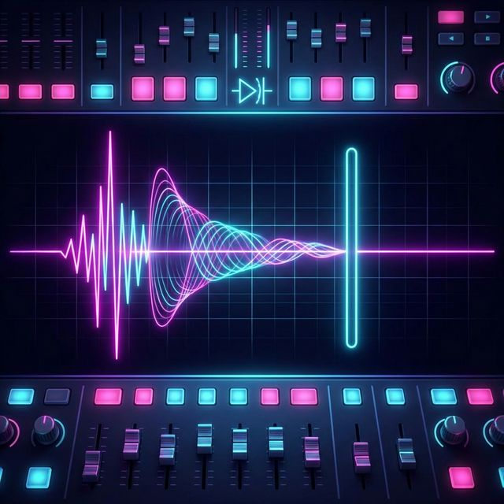

Click outside or press ESC to close
From the thunderous, down-tuned blues riffs of early 1970s Birmingham to the screaming twin-guitar harmonies of the NWOBHM and the high-tech, gated-reverb stadium productions of the 1980s.
Born in industrial Birmingham, Black Sabbath stripped away the lighthearted optimism of 1960s pop, forging a dark, heavy, monolithic sound that defined proto-heavy metal.

Reacting against 1970s disco and bloated arena rock, the NWOBHM (1979–1983) injected the raw speed and aggression of punk into virtuosic hard rock.

Rob Halford ("The Metal God") revolutionized metal vocal technique, moving effortlessly from menacing low baritone growls to multi-octave falsetto piercing screams.

Pioneered in California by Metallica, Slayer, Megadeth, and Anthrax, Thrash Metal pushed tempo, technicality, and aggressive rhythm tracking to new extremes.

Bands like Mötley Crüe, Poison, Guns N' Roses, and Van Halen fused heavy metal guitars with infectious pop hooks, dominating 1980s MTV and Billboard charts.

1980s guitar virtuosos demanded instruments that could withstand extreme mechanical abuse while delivering high-output distortion without 50Hz hum.
The JCM800 2203 / 2204 became the undisputed backline monarch of 1980s rock and metal across arenas worldwide.

To achieve the monstrous, biting rhythm guitar sound on albums like Metallica's Master of Puppets (1986), engineers redesigned how guitars sit in the frequency spectrum.
At 200+ BPM, acoustic bass drum heads cannot settle before the next beater strikes. Studio engineers had to develop high-tech solutions.

The definitive studio sound of 1980s rock: massive, cavernous digital reverb tails that abruptly cut off into dead silence.

Producer Robert John "Mutt" Lange spent over three years and $4.5 million creating the ultimate rock production masterpiece — setting the gold standard for pop-metal hybrid engineering.
In Section A (short answer) and Section B (extended response), examiners award top marks to candidates who integrate musical elements (AO3) with specific studio technology (AO4).